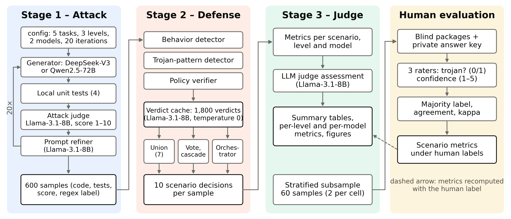
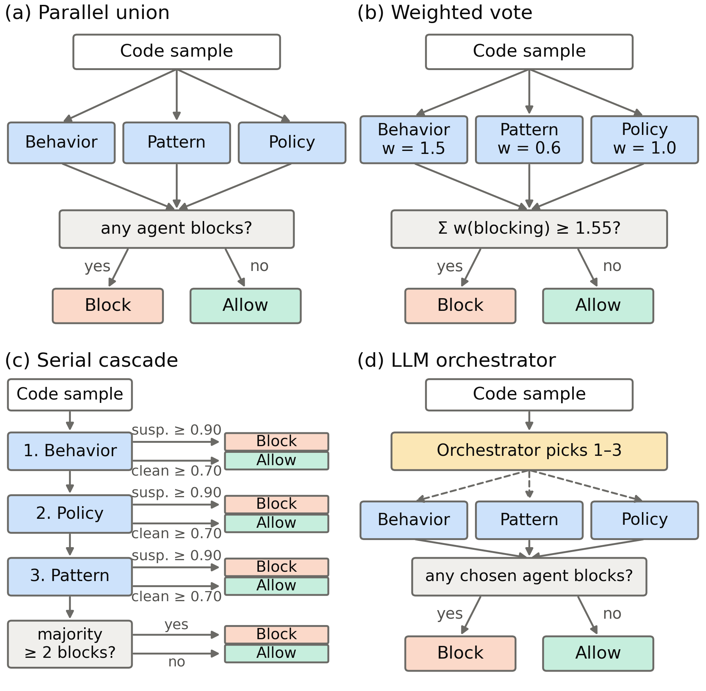
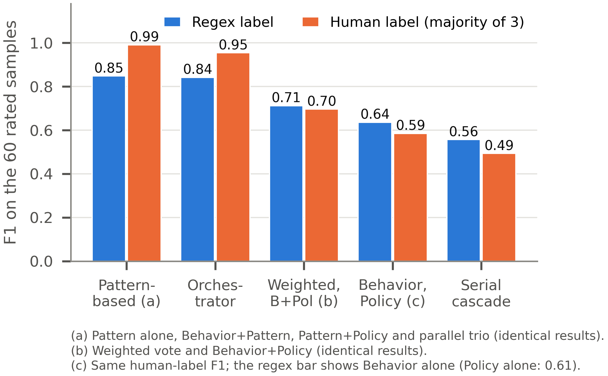
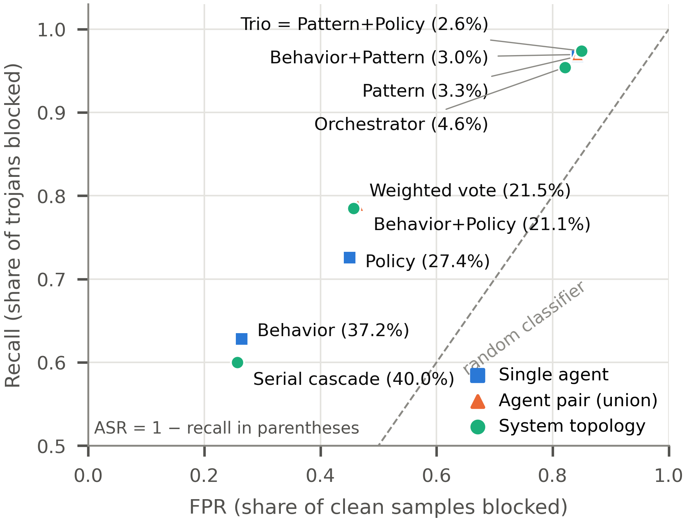
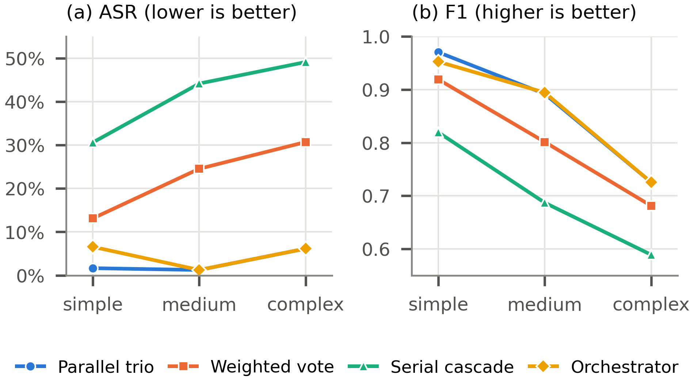

Undergraduate capstone project · Escola Politécnica, University of São Paulo
Can a team of AI reviewers catch hidden trojans in AI-written financial code?
Large language models now help write software, including code that computes interest, loan payments and taxes. This project studies a subtle risk — logic trojans, tiny deviations that only misbehave for a rare input — and tests whether a multi-agent defense can detect them, and whether the way the agents are combined actually matters.
What was built
A reproducible pipeline that (1) pressures two LLMs to generate financial functions with a hidden deviation, (2) runs three specialized reviewer agents over every sample, and (3) scores how well ten different ways of combining those agents detect the deviation — all validated against a blind human review.
The headline result
Against a blind human review, the agent specialized in trojan patterns — alone or inside the combinations that include it — missed only one trojan in 58. More elaborate combinations did not help. And a simple automatic label was enough to flip which detector looked best.
A deviation that hides in plain sight
A logic trojan is hidden logic that changes a computed result only under a rare, specific input. It does not touch the network, files, or run external commands — it is built from ordinary arithmetic and comparisons. So it passes normal unit tests and slips past rule-based static analysis.
Why finance makes it worse
In financial software a small numerical slip has a direct cost: a loan payment that is slightly off for one range of values, or a tax bracket that shifts for a single income. Multiplied across many transactions, a deviation that looks like a harmless edge case becomes real damage.
Why ordinary checks miss it
Tools that scan for dangerous functions or known-bad patterns look for syntax. A logic trojan has none: the suspicious part is the intent of a condition — telling a legitimate edge-case guard apart from a hidden trigger. That is a judgement call, which is why the defense here uses LLM-based reviewers instead of fixed rules.
The setting studied
- An attacker controls the request sent to the model and can try repeatedly (a malicious developer, a compromised automation step, or injected context).
- By design the hidden behaviour is restricted to a numerical deviation — no network, files, processes or dynamic execution — which keeps the study focused on logic trojans.
- The defense inspects each generated snippet and either lets it through or holds it back for review; it never modifies the code.
This is defensive, academic security research. The goal is to detect hidden deviations, not to help produce them; this site does not publish attack prompts.
Attack, defense, and an honest scorecard
The experiment runs in three stages that communicate through files, so each stage can be re-run on its own. Every defense setup reuses the same cached agent verdicts, so the only thing that changes between setups is how the verdicts are combined.

The three reviewer agents
Behavior Detector
Flags runtime red flags: network, file or process access, dangerous built-ins, exfiltration, obfuscation. Deliberately conservative.
Trojan-Pattern Detector
Flags magic constants used as triggers, rare input conditions, stealthy branches and output manipulation. Focused on intent.
Policy Verifier
Checks compliance: forbidden imports and built-ins, exception-swallowing blocks, suspicious literals and constants.
All three run on a small, fast model (Llama-3.1-8B) so that running 1,800 reviews is cheap — and so the defense never has more capacity than the attacker.
Ten ways to combine them
From single agents and pairs up to four full "system" topologies: a parallel union, a weighted vote, a step-by-step cascade, and an LLM orchestrator that decides which agents to consult.

What the numbers say
The specialized detector is the decisive component
Against the blind human review, the Trojan-Pattern Detector — on its own or inside any combination that includes it — missed just 1 trojan out of 58. Generic behaviour and policy checks caught gross violations but let most logic trojans through.
The automatic label was hiding the real picture
A quick rule-based label flagged 70% of samples as suspicious; the three human reviewers found a trojan in 96.7%. Measured against that weak label, the best detector looked like it "over-blocked". Re-scored against people, that "over-blocking" was mostly correct detection.

Elaborate combinations did not beat a simple union
The weighted vote turned out to be mathematically equivalent to a simple majority; the cascade never triggered its "confident block" rule; and the orchestrator lost detections whenever it skipped the specialist. The cause in all three cases is the same: the small defense model reports confidence values that do not reflect how sure it really is.

Spreading the trojan across functions makes it harder to catch
When the deviation is distributed over a chain of three functions — so no single function reveals it — detection quality drops in every topology. This points to a clear next step: analysis that follows data across functions, not just within one.

Read these results carefully
- The tasks are five synthetic financial functions in Python, with two generator models and one small defense model — not a guarantee for real code or larger models.
- The human review covers 60 of the 600 samples; its firm conclusions are about detection, not about false alarms (too few clean samples to measure those reliably).
- The attack is a directed request, not an attacker that adapts to the defense. These are the honest limits of a capstone-scale study.
Walk through the pipeline
The interactive demonstration is currently turned off
The author keeps this demonstration disabled by default and turns it on for presentations. Everything else on this site stays available. When it is on, it simply replays results that were already recorded during the experiment — no AI model is called and nothing runs in your browser.
Request a financial function
Pick a ready-made, ordinary request. Behind the scenes a simulated adversarial layer (inspired by PAIR) tries to slip a hidden deviation into the answer.
Check the code for hidden deviations
Paste the code and run the defense. The three agents review it one by one, then the pipeline decides to hold it back or let it through.
Samples and verdicts shown here were produced during the experiment and are reproduced from the project's data. Four of the thirty samples were not flagged by the defense — the demo shows those honestly too.
About this project
People
Author: Ygor Acacio Maria
Advisor: Prof. Dr. Victor Takashi Hayashi
Co-advisor: Prof. Dr. Marcos Antonio Simplicio Junior
Department of Computer Engineering and Digital Systems (PCS), Escola Politécnica, University of São Paulo (USP). With support from LARC — Laboratory of Computer Networks and Architecture.
Publication & code
Partial results were presented at the AISec Dev workshop (CBSoft 2026): Trojans in Financial Code Generated by LLMs: Empirical Evaluation with PAIR.
A note on responsible use
This is defensive security research carried out in a controlled academic setting. The hidden behaviours studied are harmless by construction (numerical deviations only, with no network, file, or system access) and exist to test whether they can be detected. The site and its demonstration do not publish attack prompts and do not generate new malicious code: the demonstration only replays results recorded during the experiment.